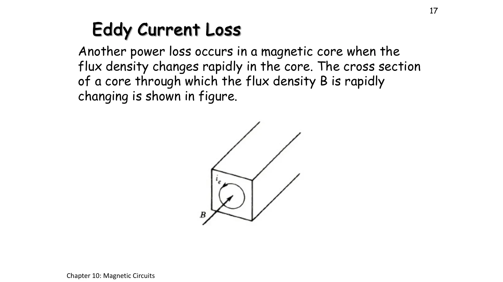

การสูญเสียในแกนและการกระตุ้นด้วยไฟสลับ Why an iron core warms up, and how an AC voltage sets its flux
Core losses and sinusoidal excitation Why an iron core warms up, and how an AC voltage sets its flux
เมื่อกระแสในขดลวดเป็นไฟสลับ ฟลักซ์ในแกนกลับทิศไปมาตลอดเวลา และแกนเหล็กเสียพลังงานเป็นความร้อนสองทาง (สไลด์หน้า 15–19) ทางแรกคือฮิสเทอรีซิส (hysteresis): B ตามหลัง H จึงวนเป็นวง และพื้นที่ในวงคือพลังงานที่เสียไปทุกรอบ (ส่วน A) ทางที่สองคือกระแสไหลวน (eddy current) ที่ฟลักซ์ซึ่งเปลี่ยนแปลงเหนี่ยวนำให้ไหลวนในเนื้อเหล็กเอง แก้ได้ด้วยการทำแกนเป็นแผ่นบาง (ส่วน B) สองอย่างรวมกันเรียกว่าการสูญเสียในแกน (core loss) จากนั้นเป็นสไลด์ปี 2560 หน้า 21–23 ซึ่งไม่มีในเอกสารปี 2566: ฟลักซ์ไซน์เหนี่ยวนำแรงดัน \(E_{rms} = 4.44fN\Phi_{max}\) (ส่วน C) และ Example 10.4 ขดลวดบนไฟ 120 V 60 Hz (ข้อ 1)
When the coil current is AC, the core flux reverses all the time and the iron loses energy as heat in two ways (slides pp. 15–19). The first is hysteresis: B lags H, so it runs round a loop, and the loop area is the energy lost every cycle (section A). The second is eddy currents, which the changing flux induces in the iron itself; making the core of thin sheets cures it (section B). Together they are called the core loss. Then come slides pp. 21–23 of the 2017 deck, which the 2023 handout does not have: a sinusoidal flux induces the voltage \(E_{rms} = 4.44fN\Phi_{max}\) (section C), and Example 10.4, a coil on 120 V, 60 Hz (problem 1).
ประเด็นสำคัญของหน้านี้
- ฮิสเทอรีซิส: เมื่อลดกระแสเป็นศูนย์ เหล็กยังมีความหนาแน่นฟลักซ์คงค้าง \(B_r\) (residual) ต้องใช้ H กลับทิศเท่ากับ \(H_c\) (coercive force) จึงจะลบได้ พื้นที่ในวงต่อปริมาตรคือพลังงานที่เสียไปต่อรอบ จึงได้ \(P_h = K_hB_{max}^n f\) โดย n อยู่ระหว่าง 1.5–2.5 (สไลด์หน้า 15–16, ส่วน A)
- กระแสไหลวน: ฟลักซ์ที่เปลี่ยนแปลงเหนี่ยวนำกระแสวนในเนื้อเหล็ก \(P_e = K_eB_{max}^2 f^2\) ลดได้สองทาง คือเติมซิลิคอนราว 4 % ให้เหล็กมีความต้านทานสูงขึ้น และทำแกนเป็นแผ่นบางที่ฉนวนคั่น: แบ่งเป็น n แผ่นการสูญเสียเหลือราว \(1/n^2\) (สไลด์หน้า 17–18, ส่วน B)
- การสูญเสียในแกน \(P_c = P_h + P_e\) กลายเป็นความร้อน (สไลด์หน้า 19) เพิ่มความถี่สองเท่า: \(P_h\) เพิ่มสองเท่า แต่ \(P_e\) เพิ่มสี่เท่า
- การกระตุ้นด้วยไฟสลับ: \(\Phi = \Phi_{max}\sin\omega t\) เหนี่ยวนำ \(e = N\,d\Phi/dt = N\omega\Phi_{max}\cos\omega t\) จึงได้ \(E_{rms} = 4.44fN\Phi_{max}\) แรงดัน ความถี่ และจำนวนรอบเป็นตัวกำหนดฟลักซ์ ส่วนกระแสปรับตัวตามรีลักแตนซ์ของแกน (ส่วน C, ข้อ 1)
Key points of this page
- Hysteresis: with the current brought back to zero the iron keeps a residual flux density \(B_r\), and a reversed H of size \(H_c\) (the coercive force) is needed to remove it. The loop area per volume is the energy lost per cycle, hence \(P_h = K_hB_{max}^n f\) with n between 1.5 and 2.5 (slides pp. 15–16, section A).
- Eddy currents: the changing flux induces circulating currents in the iron, \(P_e = K_eB_{max}^2 f^2\). Two cures: about 4 % silicon raises the iron's resistivity, and a core of thin insulated sheets: n sheets leave about \(1/n^2\) of the loss (slides pp. 17–18, section B).
- Core loss \(P_c = P_h + P_e\) turns into heat (slide p. 19). Doubling the frequency doubles \(P_h\) but quadruples \(P_e\).
- Sinusoidal excitation: \(\Phi = \Phi_{max}\sin\omega t\) induces \(e = N\,d\Phi/dt = N\omega\Phi_{max}\cos\omega t\), so \(E_{rms} = 4.44fN\Phi_{max}\). The voltage, frequency and turns set the flux; the current adjusts to the core's reluctance (section C, problem 1).
วงฮิสเทอรีซิส: B ตามหลัง H และพื้นที่ในวงคือการสูญเสีย
The hysteresis loop: B lags H, and the loop area is the loss
![Slide 15, Hysteresis Loss: a toroid with a coil of N turns fed by a voltage e, its current i varying sinusoidally between i1 and −i1; note that at point c the iron is magnetized, although the current in the coil is made zero. Throughout the whole cycle of magnetization, the flux density lags behind the magnetic intensity. This lagging phenomenon in the magnetic core is called hysteresis. A B–H loop with points marked around it between −H1 and H1, the residual flux density on the B axis and −Hc on the H axis](slides/ch10/m15.webp)
![Slide 16, Hysteresis Loss: the hysteresis loops in the figure are obtained by slowly varying the current i of the coil over a cycle. When i is varied through a cycle, during some interval of time energy flows from the source to the coil–core assembly, and during some other interval of time energy (returns to the source). A square loop between B = ±1.2 T switching at H = ±10 At/m. Ph = Kh Bmax^n f, where Bmax is the maximum flux density, n varies in the range 1.5 to 2.5, f is the frequency of variation of the current, and Kh is a constant whose value depends on the ferromagnetic material and the volume of the core](slides/ch10/m16.webp)
ภาพจำลองให้ H แกว่งแบบไซน์ \(H = H_{max}\sin\omega t\) (แปรตามกระแส \(i = Hl/N\)) จุดสีชมพูวิ่งรอบวง: ขาขึ้น (H เพิ่ม) เดินตามเส้นล่าง ขาลงเดินตามเส้นบน เมื่อ H กลับเป็นศูนย์ (กระแสเป็นศูนย์) B ยังเหลือ \(B_r\) ตามที่สไลด์หน้า 15 บอก กราฟขวาแสดงว่า B ผ่านศูนย์ทีหลัง H เสมอ คือ B ตามหลัง H เลือกวัสดุ: เหล็กอ่อน (แกนหม้อแปลง) วงแคบ เหล็กแข็ง (แม่เหล็กถาวร) วงกว้าง และวงสี่เหลี่ยมของสไลด์หน้า 16 พื้นที่สีชมพูในวงคือพลังงานที่เสียไปต่อรอบต่อลูกบาศก์เมตร
The simulation swings H sinusoidally, \(H = H_{max}\sin\omega t\) (in step with the current \(i = Hl/N\)), and the pink point runs round the loop: going up (H rising) along the lower curve, coming back along the upper one. When H returns to zero (zero current), B still has \(B_r\) left, as slide p. 15 says. The right-hand graph shows B always crossing zero after H: B lags H. Choose the material: soft iron (transformer cores) has a narrow loop, hard iron (permanent magnets) a wide one, and the square loop of slide p. 16. The pink area inside the loop is the energy lost per cycle per cubic metre.
กระแสไหลวนและแกนแผ่นบาง
Eddy currents and laminated cores

![Slide 18, Eddy Current Loss: the eddy current loss can be reduced in two ways. 1. A high-resistivity core material may be used; addition of a few percent of silicon (say 4%) to iron will increase the resistivity significantly. 2. A laminated core may be used. The thin laminations are insulated from each other. The lamination is made in the plane of the flux. In transformers and electric machines, the parts that are made of magnetic core and carry time-varying flux are normally laminated. The laminated core structure is shown in the figure, a bar of thin sheets with a small eddy current in one sheet; Pe = Ke Bmax² f², where Ke is a constant whose value depends on the type of material and its lamination thickness](slides/ch10/m18.webp)

ภาพจำลองมองหน้าตัดของแกนที่ฟลักซ์พุ่งเข้าและออกจากจอสลับกัน (× คือพุ่งเข้า • คือพุ่งออก) ฟลักซ์ที่เปลี่ยนแปลงเหนี่ยวนำแรงดันรอบทุกวงในเนื้อเหล็ก จึงมีกระแสไหลวน (จุดสีส้ม) และกลับทิศทุกครึ่งรอบตามกฎของเลนซ์ (Lenz's law) แบ่งแกนเป็นแผ่นบางที่มีฉนวนคั่น: วงกระแสถูกจำกัดอยู่ในแผ่นที่บางลง แรงดันเหนี่ยวนำต่อวงลดลงตามความหนา การสูญเสียต่อปริมาตรจึงลดตามความหนายกกำลังสอง กราฟขวาเทียบกับแกนตัน
The simulation looks at the cross section of a core whose flux points into and out of the screen in turn (× into, • out). The changing flux induces a voltage around every loop in the iron, so eddy currents circulate (orange dots), reversing every half cycle by Lenz's law. Split the core into thin insulated sheets: each current loop is confined to a thinner sheet, the voltage induced per loop falls with the thickness, so the loss per volume falls with the square of the thickness. The right-hand graph compares with the solid core.
ที่มาของ \(E_{rms} = 4.44fN\Phi_{max}\)
Where \(E_{rms} = 4.44fN\Phi_{max}\) comes from
เปิดทีละขั้นเพื่อดูว่า 4.44 มาจากไหน และทำไมแรงดันจึงเป็นตัวกำหนดฟลักซ์ สมการนี้คือหัวใจของหม้อแปลงในหน้า 10.4: ขดลวดสองชุดบนฟลักซ์เดียวกันได้ \(E_1/E_2 = N_1/N_2\)
Open the steps to see where the 4.44 comes from and why the voltage sets the flux. This equation is the heart of the transformer on page 10.4: two coils on one flux give \(E_1/E_2 = N_1/N_2\).
Example 10.4: หาความหนาแน่นฟลักซ์และกระแสของขดลวดที่ต่อกับไฟ 120 V 60 Hz
Example 10.4: find the flux density and the current of a coil on a 120 V, 60 Hz supply

ไฟเฟสเดียว 120 V 60 Hz ต่อกับขดลวด 200 รอบ แกนยาว 100 cm หน้าตัด 20 cm² \(\mu_r = 2500\) ภาพจำลองบนสุดคือแกนที่ฟลักซ์ (สีม่วง เพราะสีฟ้าใช้กับแรงดัน) วิ่งกลับไปมาตามไฟสลับ ด้านล่างคือวงจรไฟฟ้า: ขดลวดบนแกนนี้คือตัวเหนี่ยวนำ \(L = N^2/\mathcal{R}\) (หน้า 10.2) แผงข้างภาพแสดงเฟเซอร์ และกราฟด้านล่างแสดงว่าแรงดันนำหน้าฟลักซ์ 90° ส่วนกระแสเฟสเดียวกับฟลักซ์ ลองตอบก่อน
A single-phase 120 V, 60 Hz supply feeds a 200-turn coil on a core 100 cm long, 20 cm² in cross section, \(\mu_r = 2500\). The simulation shows the core on top, its flux (purple, since cyan is used for voltage) running back and forth with the AC, and below it the electric circuit: the coil on this core is an inductor, \(L = N^2/\mathcal{R}\) (page 10.2). The side panel shows the phasors, and the graph below shows the voltage leading the flux by 90° while the current is in phase with the flux. Try it first.
ดูวิธีทำที่ผู้สอนเขียนในห้อง (ปี 2560)See the solution written in class (2017)
ฝึกเพิ่ม
More practice
ลองทำดู 1 — ฮิสเทอรีซิส
- ส่วน A เลือกเหล็กอ่อนแล้วดูจุดที่ H = 0 (กระแสเป็นศูนย์): B ยังเหลือ \(B_r\) นี่คือเหตุที่แกนเหล็กกลายเป็นแม่เหล็กได้หลังปิดไฟ
- เปลี่ยนเป็นเหล็กแข็ง: \(H_c\) และพื้นที่ในวงโตขึ้นหลายเท่า เหมาะกับแม่เหล็กถาวร แต่ถ้าใช้ทำแกนหม้อแปลงจะร้อนมาก
- เพิ่มความถี่จาก 50 เป็น 100 Hz: พื้นที่ในวงเท่าเดิม แต่การสูญเสียต่อวินาทีเพิ่มสองเท่า
ลองทำดู 2 — กระแสไหลวน
- ส่วน B แกนตัน: วงกระแสใหญ่หนึ่งวง แบ่งเป็น 4 แผ่น: การสูญเสียเหลือ 1/16 (6.25 %)
- ที่ 16 แผ่น เพิ่มความถี่เป็นสองเท่า: \(P_e\) เพิ่มสี่เท่า แต่ยังน้อยกว่าแกนตันที่ความถี่เดิมมาก
- คำถาม: ทำไมแผ่นเหล็กต้องเรียงขนานกับทิศของฟลักซ์ (สไลด์หน้า 18 "in the plane of the flux") ถ้าเรียงขวางฟลักซ์จะเกิดอะไรขึ้น
ลองทำดู 3 — แรงดันกำหนดฟลักซ์
- ข้อ 1 ขั้นสุดท้าย: ในกราฟ e มียอดก่อน Φ หนึ่งในสี่รอบ (90°) และกระแสเฟสเดียวกับฟลักซ์
- ฝึกเพิ่มข้อ 5: ขดลวดเดิมบนไฟ 50 Hz ที่แรงดันเท่าเดิม ฟลักซ์สูงขึ้น 20 % หม้อแปลงที่ออกแบบไว้สำหรับ 60 Hz จึงอาจอิ่มตัวเมื่อนำมาใช้กับไฟ 50 Hz
- ถ้าใช้ค่า 120 V เป็นค่ายอดเหมือนเฉลยปี 2560 ทุกค่าจะต่ำไป \(\sqrt2\) เท่า ลองใส่ 1.59 mWb ในช่องลองตอบเพื่อดูคำเตือน
Try this 1 — hysteresis
- In section A choose soft iron and watch the point at H = 0 (zero current): B keeps \(B_r\), which is why an iron core can stay magnetized after the power is switched off.
- Switch to hard iron: \(H_c\) and the loop area grow several times; good for permanent magnets, but a transformer core made of it would run very hot.
- Raise the frequency from 50 to 100 Hz: the loop area stays the same, but the loss per second doubles.
Try this 2 — eddy currents
- In section B a solid core has one large current loop; four sheets leave 1/16 of the loss (6.25 %).
- With 16 sheets, double the frequency: \(P_e\) quadruples, yet stays far below the solid core at the original frequency.
- Question: why must the sheets lie along the flux (slide p. 18, "in the plane of the flux")? What would happen if they lay across it?
Try this 3 — the voltage sets the flux
- Problem 1, last step: in the graph e peaks a quarter cycle (90°) before Φ, and the current is in phase with the flux.
- Practice problem 5: the same coil on 50 Hz at the same voltage has 20 % more flux, so a transformer designed for 60 Hz may saturate on a 50 Hz supply.
- Taking 120 V as a peak value, as the 2017 solution did, makes every value \(\sqrt2\) times too small; type 1.59 mWb into the try-first box to see the warning.